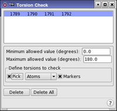

| Using | Features | Links |
This panel allows conformers to be rejected based on the absolute value of a torsion angle. It is used to monitor and reject unwanted cis or trans isomers created during a conformation search. For example, for an original trans torsion, remove all cis conformers of that torsion generated during the search.
To open this panel, choose Torsion Check from the Search variables option menu in the CSearch tab of the Conformational Search panel and click Edit.
Because highly strained structures may be generated during Monte Carlo conformational searches, the geometry around double or amide bonds may be changed (from E to Z, for example). At times it may be desirable to limit the scope of conformations retained during a search, to those structures that retain the original torsions about these bonds. Torsion checks may be used to reject structures that do not retain the original geometry for these special cases. The check is applied after minimization. Note, torsion checks do not limit the range of conformers searched or constrain the torsion during minimization. See the Constraints Tab topic for more details on constraining a torsion to a specific value during minimization.
The simplest way to define torsion checks is to click the Perform Automatic Setup button in the Conformational Search panel. A list of the amides and double bonds in a structure is generated. This list appears in the text box located at the top of the Torsion Check panel.
Torsion checks can be added by picking atoms in the Workspace. To define a torsion for checking, choose either Atom or Bond from the Pick menu, then pick four atoms or three bonds in the Workspace. A new entry is added to the list at the top of the Torsion Check panel, and the torsion check is marked with a solid red line and a check mark. The currently selected torsion check is marked by solid lines on either side of the red line.
For each torsion check, the minimum and maximum torsional angle must be defined. Any search structures in which the checked torsional angle is not between the minimum and maximum angle is rejected and not included in search results.

This list shows the sets of four atoms that define the torsion checks to use in the calculations. You can select a line in the list to display or delete, or to redefine by picking different atoms.
If you clicked Perform Automatic Setup in the Conformational Search panel, this list contains the results of the setup when you open the panel.
Specify the minimum and maximum allowed values for torsions in these text boxes. The absolute value of the torsion angle is monitored and structures outside of the allowed range, after minimization, are rejected. For example: given an original torsion of zero degrees, Minimum value=0 and Maximum value=90 will reject trans isomers of that torsion. Given an original torsion of 180 degrees, Minimum value=90 Maximum value=180 will reject cis isomers.
Torsion checks can be added by picking four atoms from the structure in the Workspace with the standard picking controls. As the first three atoms are picked, a purple box is placed around them. Once the fourth atom is picked, a new entry is displayed in the list.
A torsion check can be redefined by picking new atoms while it is selected in the list.
If this option is selected, the selected atoms are marked with a solid red line between them,.with a dashed line joining the midpoints of the first and second and the third and fourth atoms, and a check mark. To distinguish the currently selected torsion check, the red line is drawh thicker.
To delete a defined torsion check, select it by clicking on it in the list, or re-pick the atoms that define it, then click Delete.
To delete all the defined torsion checks, click this button.